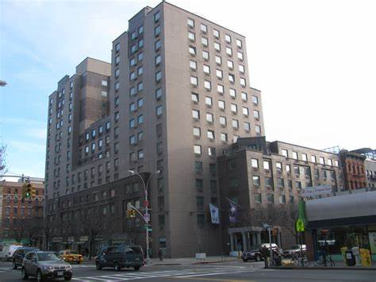

NYU Community
 Third North
특징
주소: 75 3rd Avenue, East Village에 위치
약 950명의 학생을 수용하며, NYU의 가장 큰 1학년 기숙사입니다.
캠퍼스 중심부에서 약 15분 거리로, 도보 이동 가능
활발한 소셜 분위기와 다양한 이벤트
장점: 다이닝 홀이 건물 내에 있어 식사 접근성이 좋음, 각 스위트에 주방 있음
단점:벌레 문제,낡은 건물
👍
← 메인으로 돌아가기